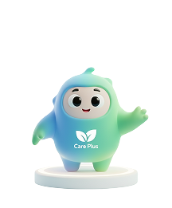

Bem-vindo ao Care Plus
Gerencie as consultas da sua empresa de forma rápida e eficiente
CarePoints
35
pts
Continue sua jornada de recompensas!
🥉
Bronze
🥉
Bronze
🥈
Prata
🥇
Ouro
35 / 100 pts para Prata
65 pts restantes
Próximas Consultas
Próximas consultas agendadas.
AS
Dr. Ana Silva
Confirmada
Cardiologia
CS
Dr. Carlos Santos
Pendente
Odontologista
MO
Dra. Maria Oliveira
Confirmada
Dermatologia
São Paulo
☀️
25°
Ensolarado
Umidade
65%
Vento
12 km/h
Sensação
26°

Precisa de ajuda?
Nosso assistente virtual Beni está sempre disponível para você!